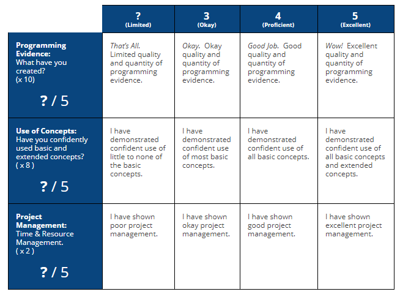
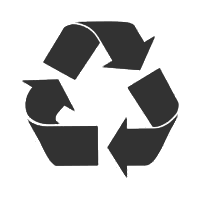

Purpose of Project
Build a portfolio of programming evidence that demonstrates your ability to confidently use functions and data structures.
Your portfolio may be a mixture of programs made individually and programs made with a partner. However, at the end of the project, everyone will be expected to do an individual portfolio presentation to me.
What to Create?
Create programs that you are interested in and that are interesting / useful.
- Plan and create an original idea.
- Re-create a program that already exists.
- Modify / extend a project starter.
Concept CheckList
Be sure to use all of the functions and data structures concepts listed below in your portfolio programs. Consider using the extended concepts, where applicable.
Functions Concepts
- Pass data to/from functions using parameters/arguments and return values.
- Use functions/files to organize code into logical chunks. (Big Boss ordering minions)
- Use functions to improve program efficiency / reduce duplication of code.
- Use local and global variables appropriately. (Only use global variables when necessary)
- Make use of math-extensions library and/or graphics library created in class.
Data Structures Concepts
- Create appropriate data structures to store program data. (basic arrays, parallel arrays, 2D arrays, arrays of objects, etc)
- Traverse data structures to access data.
- Traverse data structures to modify data.
- Dynamically add/remove data.
CS20 Extended Concepts Learn more...
- Use 2D Arrays to manage grid-based data.
- Implement "persistent data" with Local Storage and JSON.
Delieverables / Timeline
Record of Accomplishments
Use the "Project B - Record of Accomplishments" document shared on Google Classroom to maintain a record of programs that you have created.
Portfolio Presentation
Prepare to share your portfolio with me by completing the following:
- Make sure your portfolio source code is well organized on your F: drive.
- Make sure your "Project B - Record of Accomplishments" document is up to date and be prepared to answer questions related to your accomplishments.
- Complete the "Project B - Self Assessment" document shared on Google Classroom.
Curriculum Connection
This project connects with:
- Client-Side Scripting 3
- Client-Side Scripting 2
Project B - Marking Guide

Original Creation

Plan and create an original program idea!
Re-Creation
Re-create a program that already exists. Make it your own by adding personal features.
Project Starter
Complete a tutorial to get you started. Then modify and extend it to make it your own.